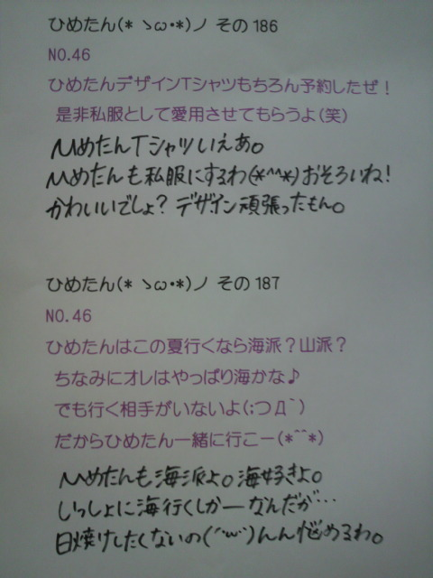

ブログ楽しみに待っててくださった方、本当にごめんなさい。
最近ブログと向き合う時間ができなかったこと、反省(´；ω；｀)
ひめたんは元気ですよー
名古屋liveきて下さった方ありがとうございました
ひめたんはやっぱり歌が好きで、ダンスが好きで、このliveのために今まで
精一杯頑張ってきてよかったなって思いました(^^)
昨日の私たちの「初」の本格的な単独liveにみんなで出れなかったこと、
アンダー全員で「涙がまだ悲しみだった頃」が披露できなかったこと、
それでもやっぱり大好きなみんなとliveできてよかったなってこと。
悔しい半分、嬉しい半分てとこかな。
パレオはエメラルド、会いたかった、Beginner。
48グループさんの曲に挑戦(`・ω・')
自分らまだまだだなーってのと、ライバルの存在の大きさを痛感しました。
個人的には、パレオのような元気なダンス好きすきよ＊
雛壇にあがると、会場全体が見渡せて気持ち良かった。
サイリウムきらきらだったーよ！
そして、今回のliveを通して思ったこと。
中身は違えど、みんなそれぞれ抱えてる
今までにないようなプレッシャーを感じてみたり
気持ちはあっても体がついていかなかったり
ひめたんみたいに、改めて悔しい思いをしたりした子もいるかもしれない。
取り組めば取り組むほど、悩みや不安もおっきくなる。
でも、それだけ今回のliveに真剣に向き合ってる証拠だってことなんだって。
30分のミニliveでくたくたになってた私たちが、Zeppで２時間踊り切れた。
体力と精神力はこのliveでちょっと成長できたかな。
東京公演も頑張ります。
セトリ＊長いよーっ
走れ！Bicycle
ハウス！
涙がまだ悲しみだった頃
狼に口笛を
左胸の勇気
せっかちなかたつむり
人はなぜ走るのか
音が出ないギター
パレオはエメラルド
会いたかった
Beginner
ぐるぐるカーテン
おいでシャンプー
失いたくないから
会いたかったかもしれない
走れ！Bicycle
乃木坂の詩
そして昨日は
広島のVibe On Music生放送出演！
ゆーわけで1日
まあや
(和田まあやchan)と２人で岡山広島巡りました＊
もちろんお仕事よ。

(*´・ω・*)ひめたん